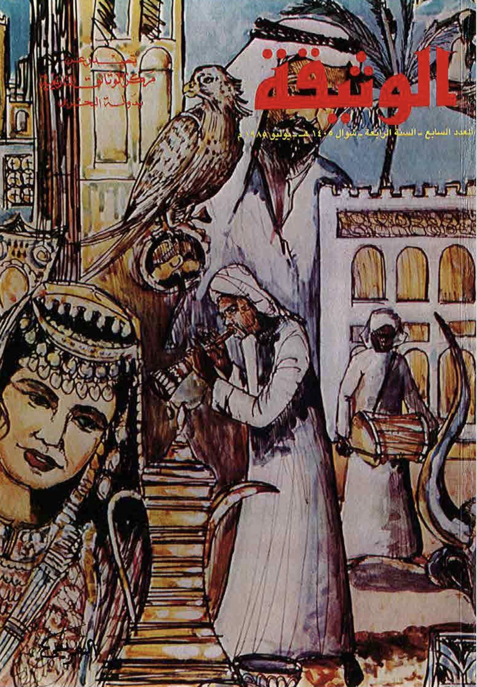
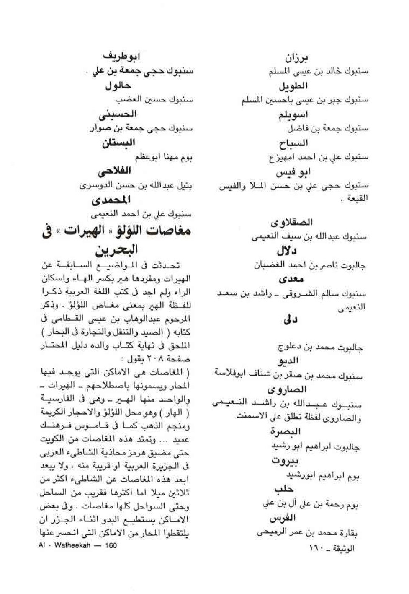
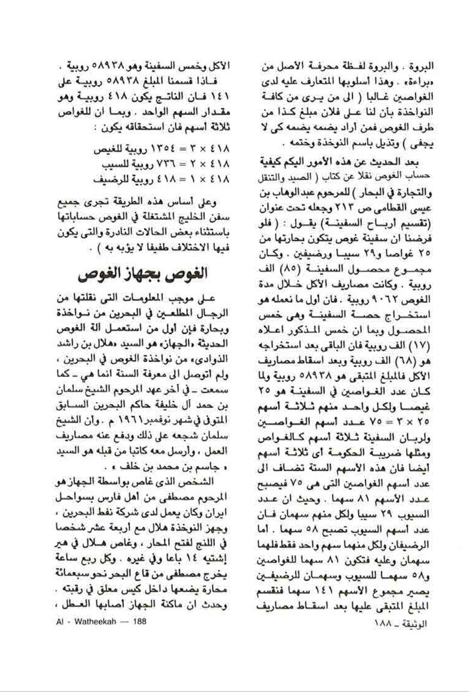

يوليو ١٩٨٥م · صفحات من مجلة الوثيقة، العدد السابع، السنة الرابعة، شوال ١٤٠٥هـ (يوليو ١٩٨٥م)، مركز الوثائق التاريخية، البحرين، ص ١٦٠ و١٦٨ و١٨٨
الوثيقة ١٩٨٥: كتاب عبدالوهاب بن عيسى القطامي مرجعا في الغوص على اللؤلؤ
ما هي
دراسة عن الغوص على اللؤلؤ في البحرين تنقل عن «المرحوم عبدالوهاب بن عيسى القطامي» وكتابه «الصيد والتنقل والتجارة في البحار» الملحق بكتاب والده «دليل المحتار في علم البحار» ثلاث مرات. ١. الصفحة ١٦٠: عن الهيرات، وهي المغاصات الممتدة من الكويت حتى مضيق هرمز محاذية الشاطئ العربي (ص ٢٠٨ من كتابه). ٢. الصفحة ١٦٨: أن عمق المغاص لا يزيد في الغالب عن ١٣ باعا أي ٧٨ قدما. ٣. الصفحة ١٨٨: مثاله في تقسيم أرباح سفينة الغوص بين الغواصين والسيوب والسفينة (ص ٢١٣ من كتابه).
أهميتها
يبين أن كتاب عبدالوهاب عيسى القطامي عن البحر اعتمد مرجعا في الخليج العربي، ويؤكد أنه نشر ملحقا بدليل المحتار.
صور الصفحات




المصادر
الوثيقة، العدد السابع، السنة الرابعة، شوال ١٤٠٥هـ (يوليو ١٩٨٥م)، مركز الوثائق التاريخية، البحرين، ص ١٦٠ و١٦٨ و١٨٨
كيف كُتب هذا النص: لا يظهر عنوان المقال واسم كاتبه في الصفحات المرسلة. والصفحة ١٣٥ تذكر القطامي الشاعر العربي القديم لا عائلتنا، فلم تعرض.
افتح في الموقع التفاعلي